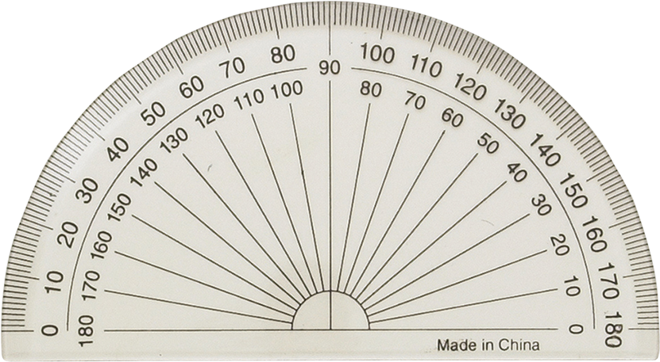
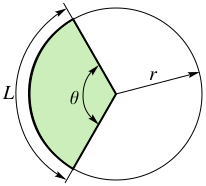
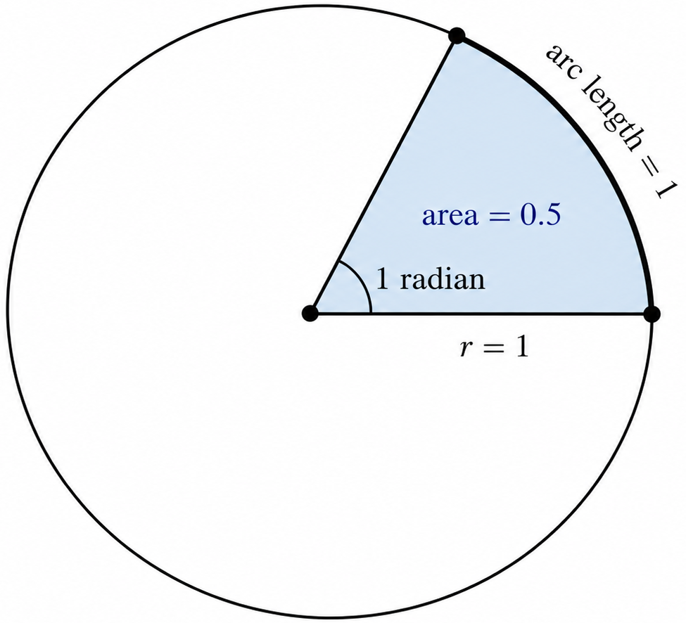
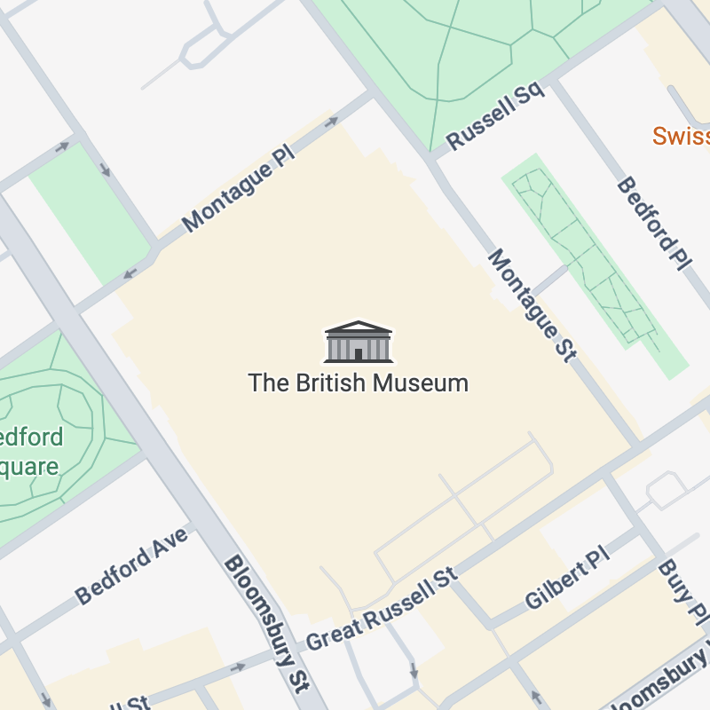

An angle is a quantity measuring the
separation between two intersecting lines.
The most common unit used to measure angles day-to-day is the degree (°).
But where did this unit come from, and why are there 360 of them in a circle?
And what on Earth are Radians? and Gradians?? If you aren't familiar with them all, keep reading and you
will
be soon!
θ:
Degrees
The degree came from the
ancient
Babylonians, who used a different number system
than
the
one
we use today
with the numbers 0123456789 - theirs had sixty different numbers before it reached double
digits.
(It's
pushing the definition of digits, but the referee allowed it apparently.) A common
initial reaction, as was mine, is "goodness, how hard must it have been to learn all those
symbols!"
However this could not be farther from the truth, as the sixty numbers were written using only
two
characters, using a denary
substructure:
This system is known as sexagesimal, from the
Latin word sexaginta meaning
"sixty".
(Contrast with our current number system with 10 unique characters, which is known as decimal or
denary.)
There are many theories of why this number system was preferred over decimal, which uses as many
digits
as a
homo sapiens has on their hands, but all are speculative to the best of my knowledge,
the
best
being that sixty is better for dividing - it is a multiple of 2, 3, 4, 5, 6, 8, 10, 12, 15, 20
and
30.
Due to their use of sexagesimal, the Babylonian astronomers decided to use an idealised year. A
year,
we
know
now, is 365.2422 days long. The Babylonian year was given exactly 360 days,
with 12
months
of 30 days each. This was a very significant number to them, since their counting
system was based on the numbers 6 and 10 as well as 60, and 6 times 60 is 360. It is like us
rounding a number to 10, 100 or 1000 in the decimal system.
However you might notice the obvious problem here - that 360 days is not the true length of the
year!! As
a
result, their calendar would gradually drift away from the true seasons, by almost exactly
5.2422
days
each
year as
it turns out.
They invented a valid yet displeasing solution to this problem: whenever the stars or crops
indicated
that
spring was
still far away, but the calendar said it was drawing close, the King would issue a royal decree,
commanding
the
entire empire to repeat
the current month!
A surviving 7th-century BCE letter from an astronomer to King Ashurbanipal reads: "Let them
intercalate
a month... All
the stars of heaven are late... Let them intercalate it."
This system was later replaced by one whereby 7 out of every 19
years was given an extra full month,
which
pretty much fixed the problem. Phew!
Anyway, I digress. The Babylonian use of a 360 day year is what has lead to us using 360 degrees
to
represent a
full turn, as they used it for one full turn of the Earth about the Sun. (They believed that the
Sun orbited the Earth, but this doesn't affect the time interval.)

The word "degree" itself has a sensible etymology, stemming from the Latin phrase
"de
gradus",
meaning "down a step".
When you measure an angle in degrees, you are measuring how many steps you have taken around a
circular
scale. Lovely.
Radians
Radians are the next most common unit for
measuring angles. Unique among units of all kinds, the radian
requires no symbol to indicate its presence (more on that later) however sometimes you will see the
letters
"rad".
One might say the radian unit really derives from people being lazy - fundamentally its only purpose is
to
make
formulas simpler.
Here's an example: The following equation gives you the circumference of a circular arc with a given
angle,
where the angle is
measured in degrees:

The mathematical community didn't like this formula, so they made a better one:
And you have to hand it to 'em, they did a smashing job. It's a far easier formula, and normally easier
is
better and more likely to be right than a formula with lots of multipliers like "π" and "360".
The only thing you have to sacrifice to use this formula - the degree.
You must now use a new unit, which has been named the radian.
If you compare the two versions of the formula, and use some algebra, then you can write the conversion
formula between degrees and radians:
(I know the 2 can be cancelled but it only hinders my explanation.)
Looking at this formula, it becomes apparent that the number of radians in a 360 degrees (a full
turn)
must be
2π, since these 2 numbers are the numerator and denominator of the conversion factor -
the
fraction at the end of the equation.
The radian is a very convenient unit indeed, because now when we take a circle with radius 1, and
sweep out
an
angle of one radian, we will cover an arc length of exactly one
unit and also an area of half a square unit. For example, if the radius is 1 meter, then the arc
length is also 1 meter, and the sector area is 0.5 square meters.

In this way the use of π is taken out of the formulas you might have learned, for circle area and
circumference, for example, and incorporated directly into the angle.
Additionally, looking at the new arc length formula, we can see that a length is equal to a length
multiplied
by an angle. The angle must be a dimensionless, pure number,
otherwise multiplying by it would change the unit of length to something else, and that is not the case.
The explanation is that the radian is not really a unit - it's just a way of making
it clear that the number you have written is describing an angle.
Another way to think of it is as representing one meter of arc length per meter of radius: in that way a
radian is one meter per meter, or just 1, since both the 'meter's cancel each other out.
I must note that the apparent laziness of simplifying every formula is not quite that - since simple
formulas
are in general more likely to be right, the radians formulas are more mathematically pure, and you could
rightfully say that the radian is the *true* unit of angle.
Make sure you understand them!
Gradians
Okay, admit it. You have probably never heard of gradians, and if you have, then you've either been
playing
around too much with your calculator or you have a job in boundary surveying or civil engineering in
Europe.
(If it's the latter, then I recommend you skip this section.)
They were developed as part of the decimalisation
effort during the French Revolution.
They were also used in mines, and perhaps in a few other select high-stress environments - see, the
French
were not struggling with the arc length formula, but their miners and surveyors were
struggling with using degrees in mental arithmetic.
And of course, radians would only have made it so much worse.
There are exactly 400 gradians in a full turn, which makes 100 gradians a right-angle.
This made it soooo much easier to perform calculations with, since only the hundreds digit needed to be
changed if you made a quarter turn left or right.
Test it yourself:
A surveyor turns through 2.5 right angles. How many degrees is
that?
A surveyor turns through 2.5 right angles. How many gradians is
that?
Hopefully you've proved to yourself that gradians are easier!
Unfortunately, in pure maths, gradians are almost completely useless and are not used for anything.
Sorry gradians!
Arcminutes and Arcseconds
These units are based on the degree.
Arc-units are frequently used for things like coordinates on the globe, for example, so it could one day
be
lifesaving to understand how they work. (unless you never get lost in uncharted terrain)
Recall that a degree is 1/360 of a full turn.
An arcminute (often abbreviated to a minute) is 1/60 of a degree.
And an arcsecond (again often just called a second) is 1/60 of an arcminute.
The common notation is to use the standard symbol for degrees, a single quote to denote arcminutes, and
a double quote to denote arcseconds.
These wedges each show the outermost part of a circular sector with the corresponding angle:
1°
1′
1″
The angles are so tiny that the lines look nearly parallel!
The relation between arcminutes and arcseconds is exactly the same as between minutes and seconds of
time, so it's easy to remember.
The unit symbols are the same as those used for feet and inches, however you can always tell angles apart
by
the fact that angles will have an extra value at the front, in degrees.
You might feel, especially if you have never come across arc-units before, that they are entirely
pointless
since they are based on the degree. Why not just use that? But that would be like measuring
your height in yards and claiming feet and inches are redundant - they are also useful, despite the fact
they serve almost exactly the same purpose.
Here's an example:

The British Museum is at these coordinates: (according to Google Maps)
51.51941686851104, -0.12697928265933517
These numbers might make sense in your head, since we are used to counting in a base-10 system, but when
you
look at a paper map these coordinates will not be very useful.
This is because the grid lines on paper maps are almost exclusively in degrees-minutes-seconds format.
Look:
We can convert these coordinates to degrees-minutes-seconds format using division and remainders:
51° 31' 9.901" N, 0° 7' 37.125" W
And using our knowledge that an arcsecond on Earth is approximately 30 meters, we can
round
off all the
decimal places, since the British Museum is certainly larger than 30 meters:
51° 31' 10" N, 0° 7' 37" W
Leaving a fairly accurate, fairly easy to read version of our coordinates, which you will be able to find
on
a map!
The only reason the data was stored in decimal form on Google Maps is because computers are very good at
working with numbers, and they know exactly where on the screen to place a point with any number of
decimal
places.
A human, on the other hand, may be able to pinpoint the location to 1 or 2 decimal places of accuracy
within
a certain box, but no further than that. Test yourself:
Your challenge: drag the pin inside the box so its coordinates match the target
as
closely
as possible.
Axes run from 0 to 1 horizontally and vertically, with
(0,
0)
at the bottom-left corner.
Target:
0.730,
0.410
Your pin:
0.500,
0.500
Error:
—
0, 0
1, 0
0, 1
More difficult than it seems, right?
They made it much easier to use map coordinates than this, since before the ubiquity of digital maps
every
traveller needed to be able to use them. (Ideally. In reality I suppose more than a few people got
hopelessly
lost)
Perhaps try finding what's at these coordinates, without just googling it:
40° 41' 22" N, 74° 2' 40" W
You might need an atlas or a globe, and also a more detailed map of the area once you have narrowed it
down.
The best thing about following map coordinates is that you never need to guess, you can always look at
the
next set of divisions and see the lines you need to follow clearly labeled.
Conclusion
In summary, while gradians are relatively pointless, all the other angle units you should
absolutely
know and be familiar with.
Although most people in this technological era have no frequent need to read paper maps, it is still a
useful
skill, and lets you show off your abilities too.
There are probably still people in your life who you don't even consider old who grew up using them
regularly! While this skill is much rarer among the youth today, the times when it was common are still
very
much within living memory.
Degrees and radians are both totally essential. I have used both for things that I wouldn't have
expected, including once trying to fit furniture into an unusually angled corner and working out if
there
was
any
choice but to cut something apart.
I ended up finding a solution with trigonometry, using radians. We did not have to permanently disfigure
our
storage unit.
So in that vein, I hope you enjoyed learning about the units of angle, and good luck finding use cases
for
your newfound
knowledge!